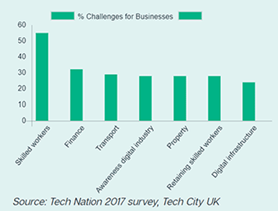

♠ The Industry ♠
Insights
The digital technology is an ever-evolving realm, and as it continues to expand and grow, so does the requirement to fill the new roles; and the desire to find individuals with the right set of skills, too. The turnover of the UK digital tech industries alone was estimated at £170 billion in 2015, showing a growth rate of 22% (or about £30 billion) in just 5 years. Within the same time period, digital businesses grew by 28%; more than twice in comparison to their non-digital counterparts. The UK is a great hub for digital industry life; In 2016, London hosted 22,000 tech related meet-ups alone!
Having lived in Manchester my whole life (originally from Chorlton ), I was eager to research more about my hometown in relation to the digital industry. Although it may seem blasphemous to admit, I’m not a great lover of football, so I was thrilled to discover Manchester is mad for music, football and now, digital tech
. This is extremely promising for my future career aspirations; as I’m currently living in a place that is already a thriving, busy hive of digital loveliness, according to TechNation’s 2017 Report on Manchester. One thing that stands out to me clearly is this simple fact; there are not enough workers available who have a good mix of highly technical skills.

The Industry & Me
When I began my course; I expected it to be mostly focused on programming languages and learning how to apply them properly. Although vaguely familiar with SEO, I didn’t fully understand things, such as optimisation and the reasons why best practices were used and encouraged.
Through the course, I’ve had the chance to cover a variety of topics through units such as UXD, Project Management, Web Programming, design & development and Creative Media production. I’m glad to have gained and improved a variety of skills, such as the importance of having strong skills in both the design and development side. There is a mass of information available online enforcing this claim; as well as insightful articles like this Mashable guide on how to be a Hybrid Designer/Developer.
Although it was noted that digital tech was still a predominantly male industry, the digital sector actually had a healthier male to female ratio split than they anticipated in 2016; which is now not the case according to Manchester Digital’s 2017 Skills Audit Report. As half of the respondents reported having all male tech teams; there is a clear need for skilled women in more technical roles and fields. I aspire to work in a Front-End development role myself; and this, paired with the fact that most of digital talent in Manchester is sourced locally, hopefully means that I should have access to positive career options within my own hometown.
It’s hard for digital companies to not only seek out skilled developers, but to find those who have good interpersonal skills, too. Client facing roles are still hard to fill, and with the increased popularity of social media, (offering a direct, more personal touch to client communications), this is not ideal. It’s no longer just about finding someone with the technical skills to build your project; it’s about the personal qualities they possess too. Ask anyone who’s tried to find a great web developer quickly; it can be a quite daunting task, and sometimes client and developer just don’t gel well. As a web developer; I aspire to maintain elevated levels of honest, and constructive communication, be it freelance with a client, or internally as part of a larger development team. Excellent communication skills are seen as integral when it comes to being a great web developer, as is being trustworthy and expressing your passion.
Ideally, I would like to be a freelance web developer ultimately; however, thinking realistically I need to ensure I have a strong niche first; something to offer clients that makes me stand out from the crowd. I would also like to gain some first-hand experience in working with clients; especially when it comes to aspects such as explaining client errors (Smashing Magazine).
References
TechNation. (2017). Tech Nation Report 2017 - Key Findings - Tech City UK. Available: https://technation.techcityuk.com/. [Last accessed 5th Nov 2017].
Osborn, George. (2015). Top 10 Women Mobile and App Leaders. Available: http://www.businessofapps.com/top-10-women-mobile-and-app-leaders/.. [Last accessed 15th Oct 2017].
Mashable. (2010). HOW TO: Be a Hybrid Designer/Developer. Available: http://mashable.com/2010/09/08/hybrid-designer-developers/#ZYJt3lMV1PqD. [Last accessed 29th Sept 2017].
Manchester Digital Skills Festival (2017). Manchester Digital Skills Audit Report. Publisher [Online] URL: Digital Skills Audit Report 2017 Last Accessed 5th Oct 2017. URL:
Young Entrepreneur Council. (2012). 4 Personal Qualities To Look For In A Great Web Developer. Available: https://www.forbes.com/sites/theyec/2012/12/10/4-personal-qualities-to-look-for-in-a-great-web-developer/#40a34b8877f7. [Last accessed 6th Oct 2017].
Barnes, Sam. (2009). How To Explain To Clients That They Are Wrong. Available: https://www.smashingmagazine.com/2009/12/how-to-explain-to-clients-that-they-are-wrong/ [Last accessed 17th Oct 2017].